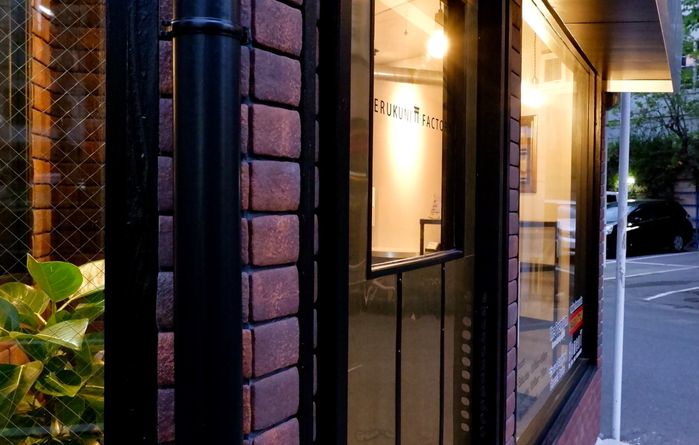
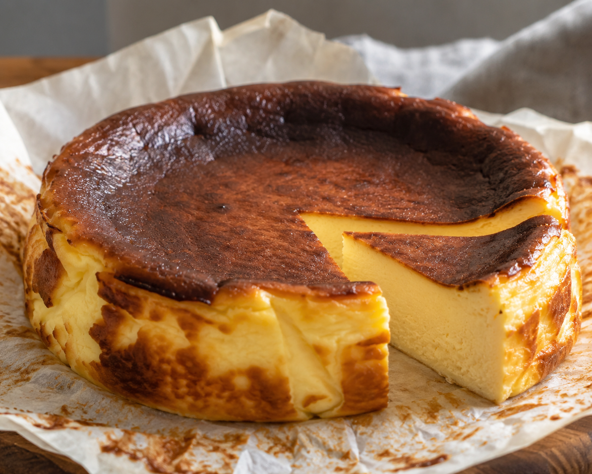
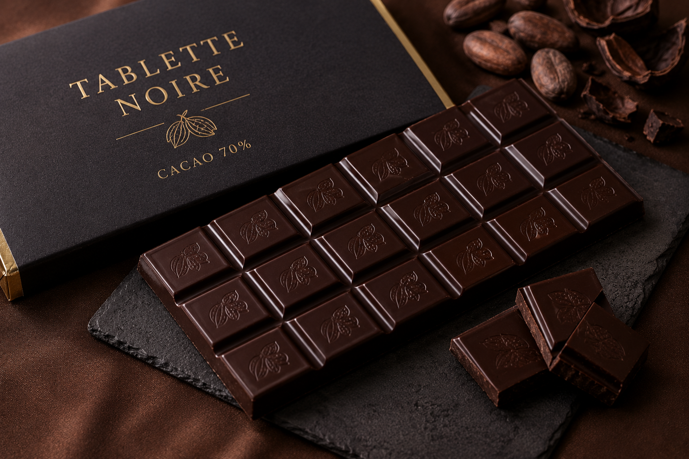

JOURNAL
上質さと親しみやすさを両立した照国本店。“目が届く範囲”で手仕事を続けるということ。
2025年、SATSUMA NOIR は原点に立ち返り、照国神社のほど近く、鹿児島・照国町に工房兼ショップを構えました。全国へ広げるのではなく、つくり手の“目が届く範囲”だけで運営する——その小さな決断が、いまの私たちの輪郭になっています。
店内には、焼きたて・解凍したての一皿をその場で味わえる小さなカフェスペースを設えました。もちろん店頭でのご購入もいただけますが、ここではエスプレッソやお茶とともに、いちばんの食べごろを知っていただきたいと考えています。職人がひとつひとつ手仕事で仕上げる“熟成冷凍”チーズケーキは、解凍後にこそ香りと甘さが花ひらきます。
上質でありながら、肩肘を張らない。日々のご褒美として、気負わず手に取っていただける——その距離感こそが、照国本店で実現したかったことでした。週末のひとときに、ささやかな贅沢をお届けできれば幸いです。
上質さを損なわずに、親しみやすさを取り入れる難しさ
高級店のしつらえは敷居が高く、けれど気軽さだけを追えば“特別”が薄れてしまう。その二つをどう同居させるか——照国本店の設計は、この問いからはじまりました。私たちが目指したのは、扉を開けた瞬間に背筋が伸びるような緊張感ではなく、深呼吸をひとつして、ゆっくりと甘いものに手を伸ばしたくなるような空気感です。
素材の余白を生かした内装、目の前で仕上がる一皿、そして手の届く価格。どれかひとつを欠いても、私たちの考える“ちょうどよさ”は崩れてしまいます。光の入り方、カウンターの高さ、器の温度に至るまで、何度も試しては置き直し、引き算を重ねていきました。足し算ではなく引き算でこそ、上質さは静かに立ちのぼると信じているからです。
背伸びをしない贅沢の輪郭を、少しずつ形にしていく。その過程で何度も立ち返ったのは、「自分たちが毎日でも通いたい店か」という問いでした。つくり手にとって心地よい場所は、訪れる方にとっても心地よい。照国本店は、その確信のうえに建っています。
“熟成冷凍”という技術が生む、解凍後の食べごろ
焼き上げてすぐではなく、ゆっくりと熟成させ、冷凍で時を止める。SATSUMA NOIR のチーズケーキは、つくった直後ではなく、解凍したそのときにいちばんおいしくなるように設計しています。冷凍は鮮度を閉じ込めるための手段であり、味を落とすための妥協ではありません。むしろ、いちばんの食べごろをお客様の手元まで届けるための、私たちなりの答えです。
解凍とともに、固く眠っていた香りがゆっくりとほどけ、乳の甘さと余韻が深くなっていきます。室温で1時間ほど解凍し、小分けにカットして、食べる分だけをお楽しみください。残りはふたたび冷凍庫へ。こうして少しずつ味わうことで、一台のチーズケーキが何度もの小さなご褒美に変わっていきます。
解凍時間を5分前後させるだけでも、口どけや香りの立ち方は驚くほど変わります。半解凍のひんやりとした食感、十分に解けたなめらかな舌ざわり——どちらが正解ということはありません。その日の気分や季節に合わせて、あなただけの“食べごろ”を見つけていただけたら、これ以上うれしいことはありません。

週末のための、ささやかな贅沢
いつもの一日を、特別な週末に。濃厚なのに、すっと溶ける。ひと口ごとに広がる深い余韻を、淹れたてのコーヒーや香り高いお茶とともに。照国本店は、そんな静かなひとときのための場所でありたいと考えています。慌ただしい平日を抜けて、ふっと肩の力が抜ける時間。その傍らに、私たちの一皿があればと願っています。
2018年に九州初のバスクチーズケーキ専門店として歩みはじめてから、私たちが大切にしてきたのは派手さではなく、深さでした。素材と静かに向き合い、手仕事でひとつひとつ仕上げる。その姿勢は、原点回帰を経た照国本店でも、これからも変わることはありません。“目が届く範囲”だからこそ守れる品質を、これからも実直に積み重ねていきます。

夜のように静かで、深い甘さ。SATSUMA NOIR という名前には、そんな願いを込めています。週末の終わり、明日へ向かう前のひととき。あなたの暮らしのささやかな余白に、この一皿がそっと寄り添えますように。照国本店で、あるいは熟成冷凍でお届けする一台で、いちばんの食べごろのおいしさにきっと出会っていただけるはずです。